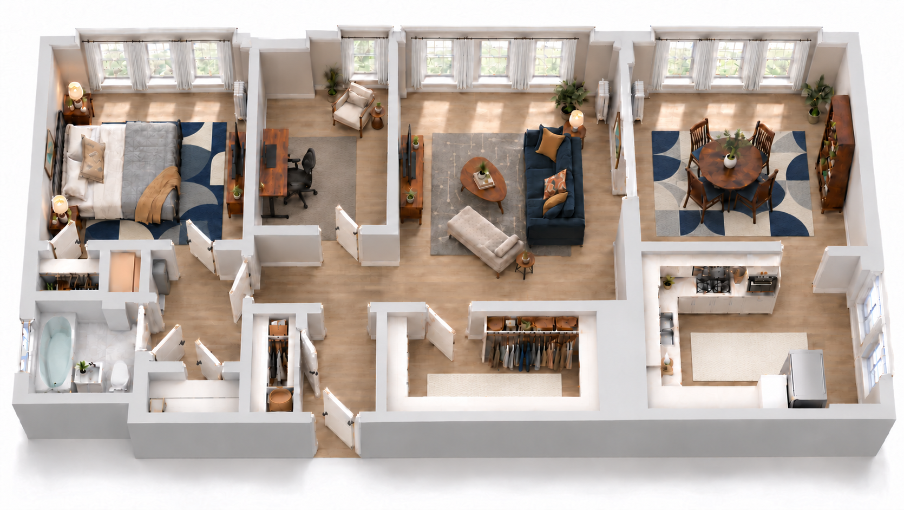

Interior study / Apartment 501
A place to call home.
Mid-century character. Natural textures. A considered palette.
View full image ↗
Download rendering ↓

Final interior visualization
Navy & ivory · Natural oak tones · Warm walnut